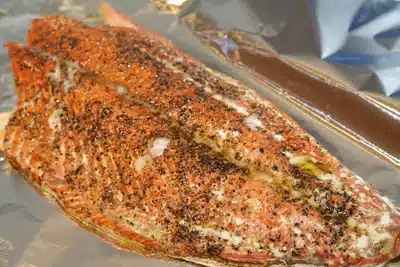

Oven Roasted Salmon

A simple and delicious way to cook salmon without a grill.
Serves: 4
Time: 20 min
Ingredients
- 1 salmon fillet, with skin (about 1 kg)
- 2 teaspoons olive oil
- ½ teaspoon salt, or to taste
- ¼ teaspoon ground black pepper, or to taste
Directions
- Cover a baking sheet with aluminum foil. Adjust oven rack to lowest position and place baking sheet in oven. Preheat oven to 220°C.
- Using a sharp knife, make 4 or 5 shallow slashes on the skin side, taking care to not cut into the flesh. You merely want to create stem vents through the skin. Place skin side down on a cutting board or plate.
- Pat salmon dry with a paper towel. Using a pastry brush or your hands, coat the flesh with olive oil and season with salt and pepper.
- Reduce oven temperature to 135°C degrees and remove baking sheet.
- Place salmon skin-side down on the baking sheet and roast until the thickest part of the fillet registers 52°C on an instant-read thermometer, about 10 to 14 minutes.
- Remove from oven and transfer to a cutting board. Slide into desired size and remove skin. Serve with rice and green beans.